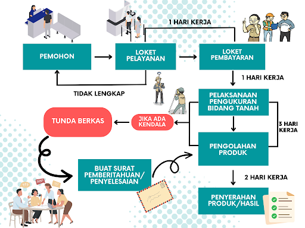

Bagan Alur Pelayanan Pengukuran Bidang Tanah

Cari Status Berkas Anda
Masukkan Nama Pemohon, Nomor Berkas, atau kata kunci lainnya untuk melacak posisi berkas.
Status Monitoring Berkas
Memuat data...Memuat data terbaru dari Google Spreadsheet...
Data tidak ditemukan. Pastikan kata kunci yang Anda masukkan sudah benar.